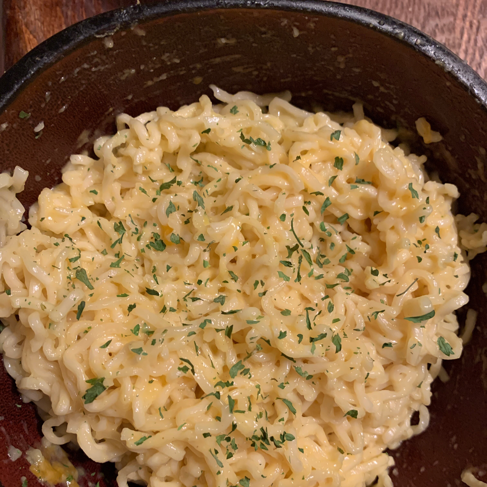

Cheesy Ramen Noodles

Description
This is an extremely simple and delicious spin on the typical ramen noodles that can be EASILY made in the college environment!
Ingredients
- 2 cups water
- 1 (3 ounce) package any flavor ramen noodles
- 1 slice American cheese
Steps
- Bring water to a boil in a saucepan.
- Add ramen noodles and cook 2 minutes until tender
- Pour out water, then stir in seasoning packet and cheese to serve.